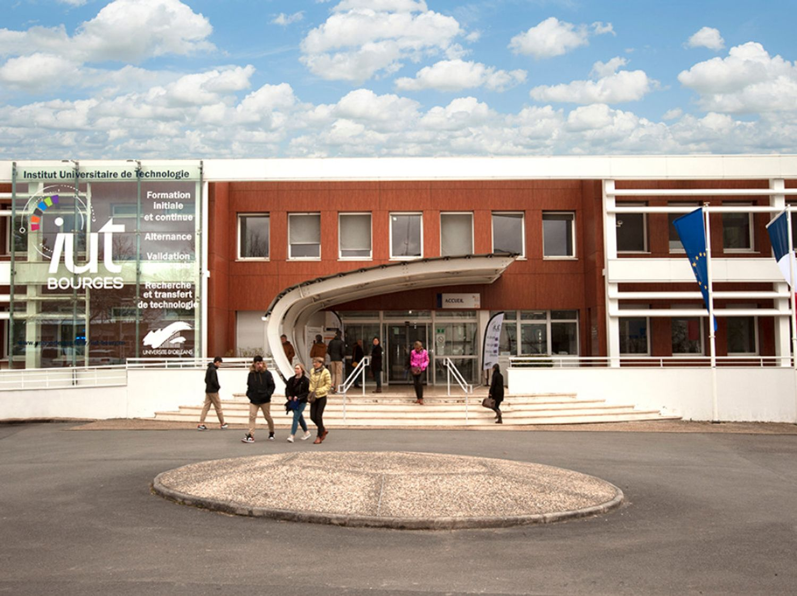
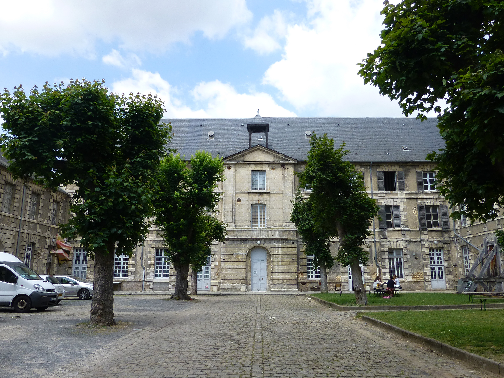
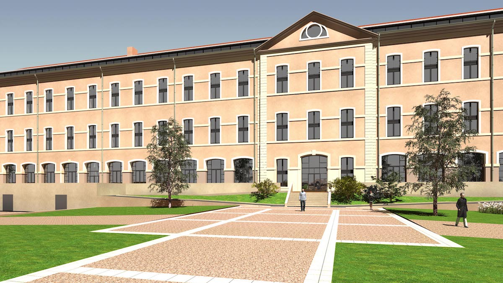
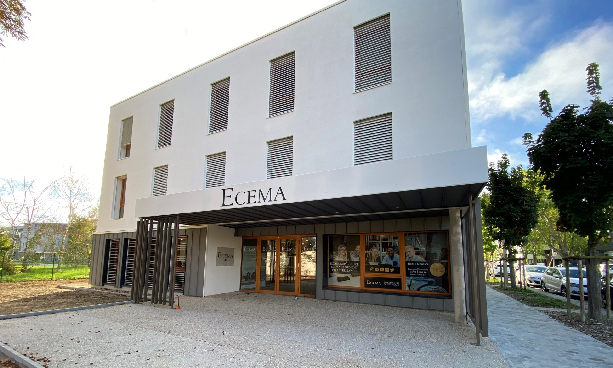
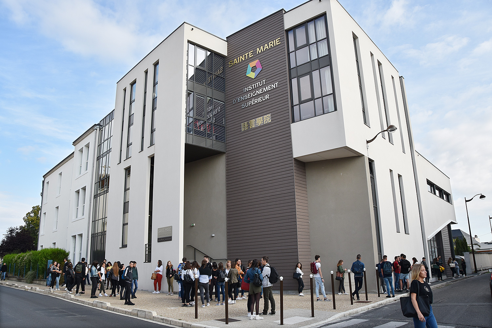

L’Institut National des Sciences Appliquées Centre Val de Loire est un Établissement
Public à Caractère Scientifique, Culturel et Professionnel (EPSCP), décret paru au
Journal Officiel le 21 juin 2013. L’INSA Centre Val de Loire est une école publique
d’ingénieurs du groupe INSA. Situé sur les campus de Blois et de Bourges en région
Centre, l’INSA Centre Val de Loire forme en 5 ans des paysagistes, des ingénieurs, des
docteurs pluridisciplinaires, scientifiques de haut niveau, humanistes, entrepreneurs et
ouverts au monde.

IUT de Bourges
L’IUT de Bourges, créé en 1968, est une composante pluridisciplinaire de l’Université
d’Orléans.

ENSA Bourges
L’Ensa Bourges est une des écoles d’art les plus reconnues en France dans le domaine de
la formation en art. Chaque année plus de 200 étudiants s’inscrivent au concours
d’entrée et le taux de réussite aux diplômes avoisine les 100%.

Faculté de Droit
La « Faculté de droit de Bourges » est une antenne de la Faculté Droit, économie et
gestion de l’Université d’Orléans. Cette structure universitaire délocalisée a été
fondée en 1993 et permet de préparer la Licence de droit parcours "droit général". Les
étudiants, titulaires de ce diplôme de l’enseignement supérieur, peuvent ensuite
intégrer les nombreux Masters, en droit public ou en droit privé, particulièrement ceux
proposés par l’Université d’Orléans.

École Supérieure de Management
L’Ensa Bourges est une des écoles d’art les plus reconnues en France dans le domaine de
la formation en art. Chaque année plus de 200 étudiants s’inscrivent au concours
d’entrée et le taux de réussite aux diplômes avoisine les 100%.

Institut d'Enseignement Supérieur Sainte-Marie
L’ Institut d’Enseignement Supérieur Sainte-Marie de Bourges propose 5 BTS (Notariat,
CI, MUC, Gestion de la PME, CG). Nos étudiants travaillent dans un bâtiment moderne et
agréable, adapté aux besoins technologiques actuels et muni d’un amphithéâtre de 250
places.